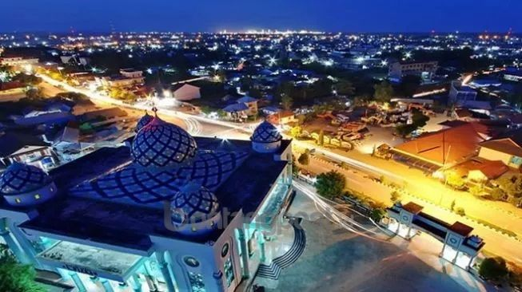
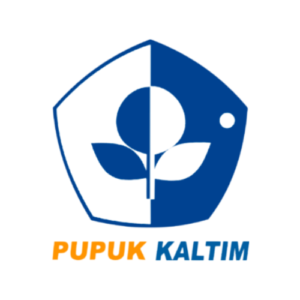
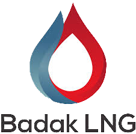
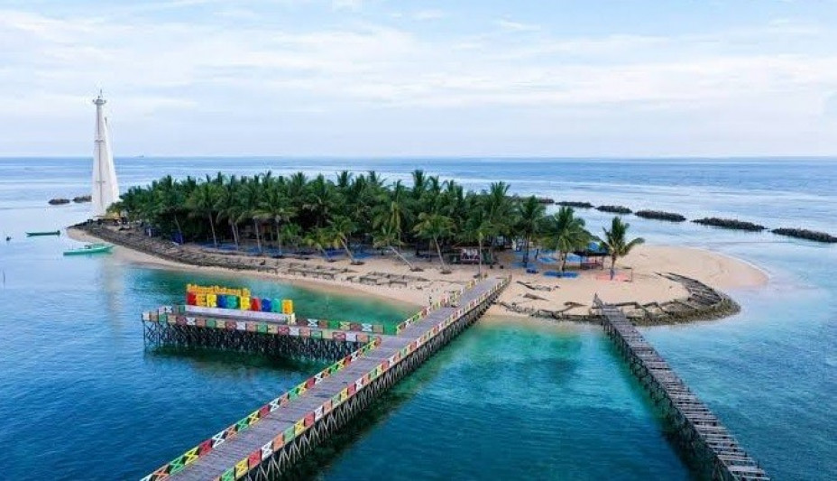
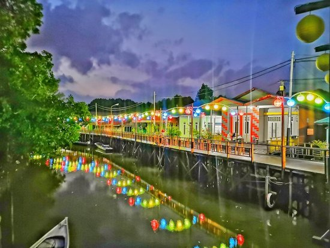
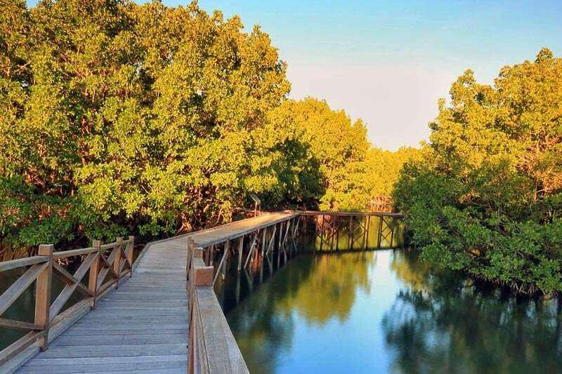
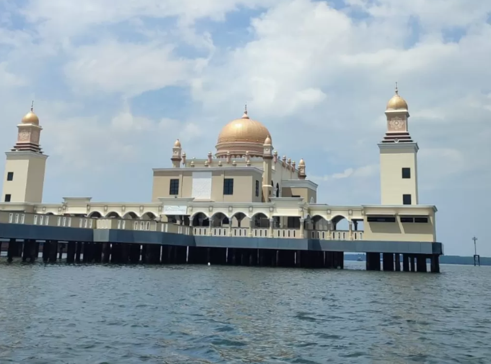
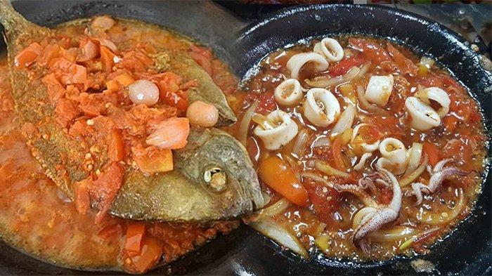

Tentang Kota Bontang
Kota Bontang adalah sebuah kota di provinsi Kalimantan Timur, Indonesia. Kota ini terletak
sekitar
120
kilometer
dari Kota Samarinda, berbatasan langsung dengan Kabupaten Kutai Timur di bagian utara dan barat,
Kabupaten
Kutai
Kartanegara di selatan dan Selat Makassar di timur.
Di kota ini berdiri tiga perusahaan besar di bidang yang berbeda-beda, Badak NGL (gas alam),
Pupuk
Kalimantan
Timur (Pupuk Urea, Amonia liquid dan Pupuk NPK) dan Indominco Mandiri (batubara) serta memiliki
kawasan
industri
petrokimia yang bernama Kaltim Industrial Estate. Kota Bontang sendiri merupakan kota yang
berorientasikan
di
bidang industri, jasa serta perdagangan.

Sejarah Kota Bontang
Kota Bontang awalnya berasal dari sebuah perkampungan kecil yang terletak pada daerah aliran
sungai
dan
berkembang secara terus menerus di bawah pimpinan Tetua Adat hingga menjadi sebuah desa, lalu
menjadi
sebuah
kecamatan dimana desa Bontang sendiri ditetapkan sebagai ibukota kecamatan yang kala itu masih
disebut
dengan
onder distrik van Bontang serta dipimpin oleh Asisten Wedana di bawah naungan tata pemerintahan
swapraja
Kesultanan Kutai Kertanegara.
Mulai 1954, Bontang dipimpin oleh seorang bupati, seiring berlakunya UU No. 27 Tahun 1959 tentang
Pembentukan
Tingkat Daerah II di Kalimantan Timur.
Selanjutnya pada 1972, pemerintah Kabupaten Kutai mengakui Bontang sebagai sebuah kabupaten.
Perkembangan besar Bontang sebagai kawasan industri terjadi setelah berdirinya dua perusahaan
besar,
PT
Badak
Natural Gas Liquefaction pada 1974, dan PT Pupuk Kaltim tiga tahun kemudian.
Kedua perusahaan tersebut tercatat membangun sarana dan prasarana yang sangat penting bagi
pertumbuhan
ekonomi
kota.
Akhirnya, pada 1989, pemerintah pusat meningkatkan status Bontang dari kabupaten menjadi kota
administratif
dan
ditindaklanjuti dengan pemekaran wilayah dari satu kecamatan menjadi dua, yaitu Bontang Utara
dan
Bontang
Selatan.
Pada 12 Oktober 1999, Bontang resmi menjadi kota mandiri yang otonom (kotamadya).
Perusahaan Terkenal

Pupuk Kalimantan Timur (PKT)
PT Pupuk Kalimantan Timur (biasa disingkat menjadi Pupuk Kaltim atau PKT) adalah anak usaha
Pupuk
Indonesia
yang bergerak di bidang produksi pupuk dan amonia. Untuk mendukung kegiatan bisnisnya,
hingga
akhir
tahun
2021, perusahaan ini memiliki enam unit pabrik di Bontang, serta kantor perwakilan di
Balikpapan
dan
Jakarta.

Badak LNG
PT Badak NGL (berbisnis dengan nama Badak LNG) adalah anak usaha dari Pertamina Hulu Energi
yang
bergerak
di
bidang produksi LNG dan LPG. Untuk mendukung kegiatan bisnisnya, perusahaan ini memiliki
kilang
di
Bontang
dan kantor perwakilan di Balikpapan
Wisata

Beras Basah
Pulau Beras Basah Bontang, merupakan pulau cantik yang dipenuhi pasir putih. Jarak antara
Kota
Bontang
dan Pulau Beras Basah berkisar 12 kilometer dengan lama perjalanan 45 menit menggunakan
kapal
ketinting
dari Pelabuhan Tanjung Laut Bontang. Aktivitas yang paling digemari wisatawan adalah
snorkeling
dan
menyelam, sebab di sekeliling pantai dihuni terumbu karang atau koral berwarna-warni, ada
pula
koral
cangkokan yang sengaja ditanam oleh Pemerintah Kota Bontang.

Bontang Kuala
Desa Wisata Bontang Kuala merupakan salah satu destinasi wisata unggulan Kota Bontang yang
terletak
di
bagian pesisir timur Bontang dengan ciri khas permukiman nelayan di atas laut yang memiliki
beragam
potensi wisata seni dan budaya, kuliner, UMKM, souvenir, petualangan, ekonomi kreatif dan
edukasi.

Mangrove
Bontang Mangrove Park merupakan salah satu objek wisata yang berada di Taman Nasional Kutai.
Tempat
terbuka untuk umum dan memiliki jalur tracking sepanjang 2.5km. Kawasan hutan bakau ini
menawarkan
suasana asri nan indah dengan luasan 280 hektare. Menyusuri jembatan ulin sepanjang 2
kilometer,
mata
para pengunjung akan dimanjakan berbagai tanaman mangrove yang beraneka ragam.

Masjid Terapung
Masjid Terapung Darul Irsyad Al Muhajirin Bontang, yang berlokasi di Kampung Atas Laut
Selambai,
Loktuan,
Bontang Utara, menjadi salah satu destinasi wisata religi yang menarik di Kota Bontang,
Kalimantan
Timur. Masjid ini tidak hanya menjadi tempat ibadah bagi umat Islam, tetapi juga menjadi
tempat
yang
nyaman untuk menikmati pemandangan laut dan suasana kampung nelayan. Masjid ini juga
menyediakan
fasilitas modern, seperti toilet, tempat wudhu, dan ruang serbaguna.
Kuliner

Sambal Gami
Sambal Gami merupakan sambal yang populer di Bontang maupun di luar Bontang. Sambal ini cocok dimakan
dengan lauk apapun terutama seafood. Ciri khas sambal gami khas Bontang, Kalimantan Timur adalah
dimasak langsung di atas cobek tanah liat. Biasanya sambal gami ditambah dengan ikan bawis yang
konon hanya ada di perairan Bontang.